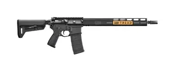
Sig Sauer SIGM400 TREAD
Полуавтоматический карабин .223 Rem с длиной ствола 16 дюймов. Цевьё M-LOK, газоотвод Direct Impingement. Поставляется с одним магазином на 30 патронов.
Калибр: .223 Rem
Ствол: 16"
Вес: 3.2 кг
Платформа: AR-15
Газблок: нерегулируемый
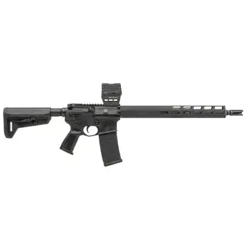
Sig Sauer SIGM400 TREAD + Holosun AEMS CORE
Карабин .223 Rem с предустановленным коллиматорным прицелом Holosun. Затворная группа из стали Carpenter 158, ствол холодной ковки. Готов к стрельбе сразу из коробки.
Калибр: .223 Rem
Ствол: 16"
Вес: 3.5 кг
Платформа: AR-15
Прицел: Holosun AEMS CORE
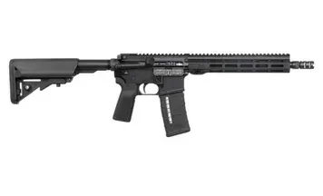
IWI ZION 15
Карабин .223 Rem со стволом 11.5 дюйма. Компактный, с регулируемым газблоком и цевьём M-LOK. Идеален для тактических задач.
Калибр: .223 Rem
Ствол: 11.5"
Вес: 2.8 кг
Платформа: AR-15
Газблок: регулируемый
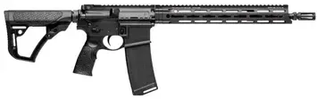
Daniel Defense DDM4 V7 SLW
Облегчённый карабин .223 Rem со стволом 14.5 дюйма. Цевьё MFR 13.5" M-LOK, пламегаситель, двухпозиционный регулируемый газблок.
Калибр: .223 Rem
Ствол: 14.5"
Вес: 3.0 кг
Платформа: AR-15
Газблок: регулируемый
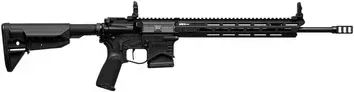
Springfield Saint Edge AR-15
Полуавтоматический карабин .223 Rem, ствол 16 дюймов, цевьё M-LOK. Затворная группа из стали 9310, ловер из алюминия 7075-T6.
Калибр: .223 Rem
Ствол: 16"
Вес: 3.1 кг
Платформа: AR-15
Газблок: регулируемый
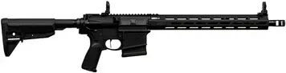
Springfield Saint Victor .308 WIN
Карабин на платформе AR-10, калибр .308 Winchester. Ствол 16 дюймов, регулируемый газблок, цевьё M-LOK. Поставляется с магазином на 10 патронов.
Калибр: .308 WIN
Ствол: 16"
Вес: 3.6 кг
Платформа: AR-10
Газблок: регулируемый
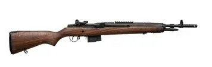
Springfield M1A Scout Squad
Полуавтоматический карабин .308 WIN с газоотводной системой по типу M14. Ствол 18 дюймов, деревянное цевьё, планка Пикатинни.
Калибр: .308 WIN
Ствол: 18"
Вес: 4.1 кг
Платформа: M14
Газблок: регулируемый
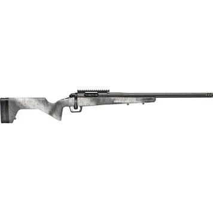
Springfield 2020 Redline 6.5 Creedmoor
Болтовой карабин с продольно-скользящим затвором. Калибр 6.5 Creedmoor, ствол 20 дюймов, покрытие Cerakote. Отличная кучность на дальних дистанциях.
Калибр: 6.5 Creedmoor
Ствол: 20"
Вес: 3.8 кг
Тип: болтовой
Покрытие: Cerakote
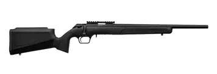
Springfield 2020 RF Target .22LR
Целевая болтовая винтовка калибра .22 Long Rifle. Ствол 20 дюймов, чёрное матовое покрытие. Идеальна для тренировок и варминтинга.
Калибр: .22 LR
Ствол: 20"
Вес: 3.2 кг
Тип: болтовой
Покрытие: чёрное матовое
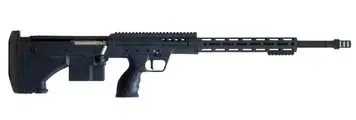
TS SRS .338 Lapua Magnum
Высокоточный болтовой карабин калибра .338 LM. Ствол 26 дюймов, дульная энергия достаточна для поражения целей на дистанциях свыше 1500 метров.
Калибр: .338 Lapua Magnum
Ствол: 26"
Вес: 5.5 кг
Тип: болтовой
Покрытие: чёрное
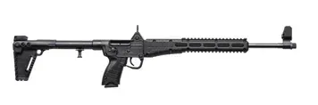
Kel-Tec SUB2000
Складной полуавтоматический карабин калибра 9x21 мм. Ствол 16 дюймов, резьба 5/8"-24 для установки дульных устройств. В сложенном виде легко транспортируется.
Калибр: 9x21 мм
Ствол: 16"
Вес: 1.8 кг
Тип: полуавтомат
Складной: да
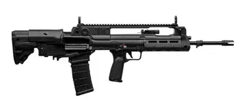
Springfield Hellion
Булл-пап карабин калибра .223 Rem со стволом 20 дюймов. Регулируемый газблок, планка Пикатинни, эргономичная рукоятка взведения.
Калибр: .223 Rem
Ствол: 20"
Вес: 3.9 кг
Тип: булл-пап
Газблок: регулируемый
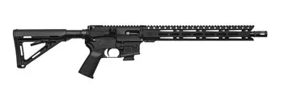
Diamondback DB 9x21
Нарезной карабин калибра 9x21 мм, ствол 16 дюймов. Цевьё M-LOK, прицельные приспособления съёмные. Надёжный автомат перезарядки.
Калибр: 9x21 мм
Ствол: 16"
Вес: 2.9 кг
Платформа: AR-15
Газблок: нерегулируемый
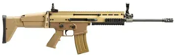
FN SCAR 16S NRCH
Полуавтоматический карабин .223 Rem, ствол 16.25 дюйма. Система газоотвода с регулируемым газблоком. Цвет Flat Dark Earth.
Калибр: .223 Rem
Ствол: 16.25"
Вес: 3.5 кг
Платформа: SCAR
Газблок: регулируемый
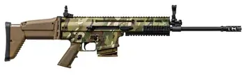
FN SCAR 17S NRCH Multi-Cam
Нарезной карабин .308 WIN, ствол 16.25 дюйма. Камуфляж Multi-Cam, цевьё с планками Пикатинни, регулируемый газблок.
Калибр: .308 WIN
Ствол: 16.25"
Вес: 3.9 кг
Платформа: SCAR
Газблок: регулируемый
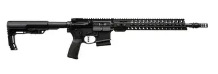
POF USA Minuteman
Нарезной карабин .223 REM, ствол 14.5 дюйма, система Direct Impingement. Чёрное покрытие, лёгкий вес.
Калибр: .223 Rem
Ствол: 14.5"
Вес: 3.1 кг
Платформа: AR-15
Газблок: Direct Impingement
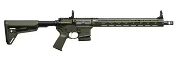
Springfield Saint Victor ODG
Карабин AR-15 калибра .223 REM, ствол 16 дюймов. Цвет Olive Drab Green. Регулируемый газблок, цевьё M-LOK.
Калибр: .223 Rem
Ствол: 16"
Вес: 3.1 кг
Платформа: AR-15
Газблок: регулируемый
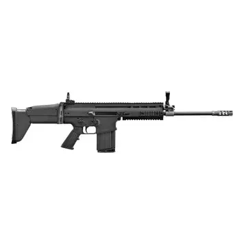
FN SCAR 17S NRCH чёрный
Карабин .308 WIN, ствол 16.25 дюйма. Чёрное покрытие, цевьё с планками Пикатинни, надёжная система газоотвода.
Калибр: .308 WIN
Ствол: 16.25"
Вес: 3.9 кг
Платформа: SCAR
Газблок: регулируемый
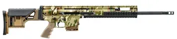
FN SCAR 20S NRCH Multi-Cam
Дальнобойный карабин .308 WIN, ствол 20 дюймов, камуфляж Multi-Cam. Регулируемый приклад, сошки в комплекте.
Калибр: .308 WIN
Ствол: 20"
Вес: 5.0 кг
Платформа: SCAR
Газблок: регулируемый
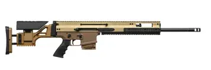
FN SCAR 20S NRCH FDE
Дальнобойная винтовка .308 WIN, ствол 20 дюймов, цвет Flat Dark Earth. Идеальна для высокоточной стрельбы.
Калибр: .308 WIN
Ствол: 20"
Вес: 5.0 кг
Платформа: SCAR
Газблок: регулируемый
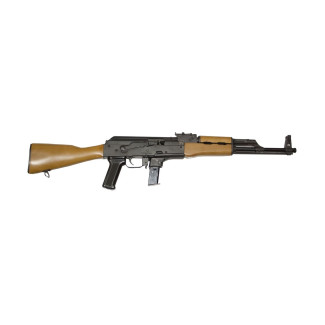
Chiappa RAK-9 9x21
Полуавтоматический карабин 9x21 мм, ствол 17.25 дюйма. Цевьё M-LOK, пламегаситель, планка Пикатинни.
Калибр: 9x21 мм
Ствол: 17.25"
Вес: 2.9 кг
Платформа: AR-15
Газблок: нерегулируемый
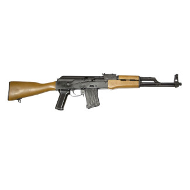
Chiappa RAK-22 .22LR
Полуавтоматический карабин .22 Long Rifle, ствол 17.25 дюйма. Matte blue, лёгкий и манёвренный.
Калибр: .22 LR
Ствол: 17.25"
Вес: 2.7 кг
Платформа: AR-15
Газблок: нерегулируемый
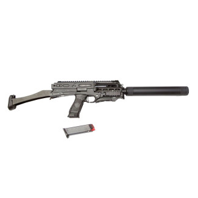
Chiappa CBR-9 9x21
Компактный карабин 9x21 мм, ствол 10.5 дюйма. Складной приклад, планка Пикатинни, пламегаситель.
Калибр: 9x21 мм
Ствол: 10.5"
Вес: 2.6 кг
Платформа: AR-15
Газблок: нерегулируемый
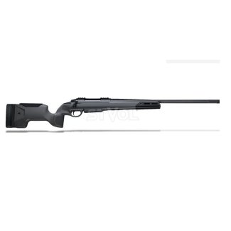
Sako S20 RH .308 WIN
Болтовой охотничий карабин калибра .308 WIN, ствол 24 дюйма. Лёгкий, с точным механизмом подачи.
Калибр: .308 WIN
Ствол: 24"
Вес: 3.7 кг
Тип: болтовой
Покрытие: чёрное
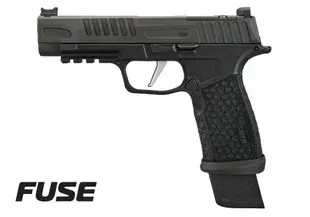
Пистолет спортивный Sig Sauer P365 FUSE
Короткоствольное нарезное оружие калибра 9х19. Длина ствола 4.3 дюйма, магазин на 12 патронов. Идеален для скрытого ношения.
Калибр: 9х19
Ствол: 4.3"
Вес: 0.7 кг
Тип: полуавтомат
Магазин: 12 патронов
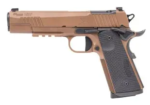
Sig Sauer 1911 X-SERIES .45 ACP
Спортивный пистолет калибра .45 ACP, ствол 5 дюймов. Регулируемые прицельные приспособления, улучшенная рукоятка.
Калибр: .45 ACP
Ствол: 5"
Вес: 1.2 кг
Тип: полуавтомат
Магазин: 8 патронов
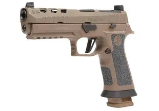
Sig Sauer P320 DH3 5IN 9х19
Спортивный пистолет калибра 9х19 мм, ствол 5 дюймов. Планка для коллиматора, регулируемая рукоятка.
Калибр: 9х19
Ствол: 5"
Вес: 1.1 кг
Тип: полуавтомат
Магазин: 17 патронов
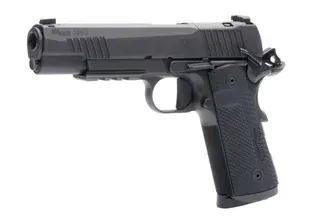
Sig Sauer 1911 X-SERIES .45 ACP BLK
Пистолет калибра .45 ACP, ствол 5 дюймов, чёрный. УСМ одинарного действия, регулируемый спуск.
Калибр: .45 ACP
Ствол: 5"
Вес: 1.2 кг
Тип: полуавтомат
Магазин: 8 патронов